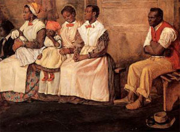
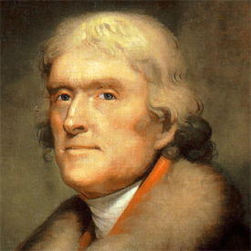
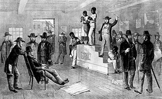

|
Virginia was the first permanent English colony in America, and the first to
import African laborers. At the time of the American Revolution, Virginia
contained almost half the black population of the United States. As late as
186O, the Old Dominion still contained more slaves than any other state, and
more free blacks as well. Culturally similar to her neighbors, Maryland and
North Carolina, Virginia grew from her Jamestown beginnings to encompass the
enormous area that now also contains Kentucky, separated by mutual agreement in
1792, and West Virginia, separated with some hard feelings during the Civil War.
Besides producing four of the first five presidents of the United States,
Virginia produced two of America's three most famous black rebels: Gabriel
Prosser and Nat Turner. Booker Taliaferro Washington was born in Franklin
County, Virginia, in 1856. The state eventually produced passionate proslavery
advocates like Edmund Ruffin and George Fitzhugh, but also produced many
abolitionists, such as the Tory Anglican Jonathan Boucher, the Presbyterian
David Rice, and the Quaker Robert Pleasants. Virginia was startled and dismayed
by John Brown's invasion of 1859, but remained calmer about it than most other
states. In the election of 1860 Virginia favored the Constitutional Union
candidates, John Bell and Edward Everett, and was determined to stay in the
Union if the federal government used only peaceful measures to persuade "erring
sisters." But once the shooting began, Virginia joined the Confederate States of
America, accepted the transfer of its capital to Richmond, and became the
principal battleground of the war.
Virginia has received much ingenious attention as the place where American
slavery began, but it did not really begin there at all. Like the English
language, the Church of England (see Anglican church), and the commercial
production of tobacco, Afro-American slavery was an importation which, in time,
took on distinctive local characteristics. In fact, black slaves could be found
all over the commercial and colonial world of the Atlantic in the seventeenth
century.
|

Virginia slaves, in a painting from the
1750s
|
Though slavery had died out in northern Europe in the Middle Ages, it had
persisted in the Mediterranean, and had increased there in the fifteenth and
sixteenth centuries, partly because of the development of sugar production on
Crete, Cyprus, and other islands. The rise to power of Spain and Portugal in the
fifteenth century sent European traders out into the Atlantic, where Portugal
developed a trade in black slaves from West Africa to the Iberian Peninsula, and
to Atlantic islands like the Canaries, the Azores, the Cape Verdes, and the
Madeiras. Finally, in league with Italian and Spanish merchants, Portugal
supplied blacks to the New World. The Spanish especially needed them in their
Caribbean colonies, where native laborers rapidly died out.
It remained for the Dutch, the world's premier navigators, traders, and
manufacturers in the early seventeenth century, to establish their West Indies
Company in 1621 and then introduce black slavery into the Caribbean for the
purpose of intensive sugar cultivation and processing. A small country, the
Netherlands sent out relatively few colonists; their empire consisted mainly of
trading posts, not settlements. They were therefore pleased to sell slaves and
machinery for the refining of sugar to the English settlers who had swarmed to
tropical islands from 1625 onward. The Dutch were also pleased to buy English
sugar and tobacco, and market them in Europe. This trade especially flourished
in the 1640s, during the English Civil War. A triumphant Parliament tried to
stop it by the Navigation Act of 1651 and the Anglo-Dutch War of 1652-1654. But
then, in a sudden switch of foreign policy, the English resumed plundering the
Spanish in the New World. Among their booty were thousands of blacks, and
Jamaica, soon to become the most profitable of the British sugar islands. Only
with the permanent establishment of the Royal Africa Company in 1672 did England
become firmly established in the Atlantic slave trade, with bases in Africa, and
a fleet regularly bringing hundreds, and then thousands, of blacks to the
Americas each year. Gradually displacing the Portuguese (who, however, continued
to supply their huge colony of Brazil) and the Dutch, the British became the
world's leading slave trader for most of the eighteenth century, yielding that
doubtful honor to the French around the time of the American Revolution.
The first blacks in Virginia arrived long before either England or her
colonies were deeply involved in the slave trade or the rationalized use of
slave labor to produce staple crops. Nevertheless, that earliest importation is
worth reviewing, especially because it has been so widely misunderstood. In
August 1619 a Dutch warship arrived at Point Comfort, several miles downstream
from Jamestown, and right on Chesapeake Bay, where it unloaded "twenty and odd
Negroes," according to John Rolfe. All subsequent accounts derive from Rolfe's
letter to John Smith, who, writing in England, reduced the number to twenty. The
Dutch ship unloaded its cargo at the dock of Abraham Piersey, probably the
wealthiest man in Virginia at the time, and the one who owned the largest number
of white and black laborers in 1625. The Dutch ship had an English pilot, "Mr.
Marmaduke," and had been privateering in the West Indies along with the
Treasurer, an old ship much employed between London, Bermuda, and
Virginia. Treasurer proceeded to Bermuda, where she unloaded a cargo of
sixteen blacks. The legend has been repeated endlessly that the first blacks in
Virginia were "indentured servants," but there is no hint of this in the
records. The legend grew up because the word slave did not appear in Virginia
records until 1656, and statutes defining the status of blacks began to appear
casually in the 1660s. The inference was then made that blacks, called servants,
must have had approximately the same status as white indentured servants. Such
reasoning failed to notice that Englishmen, in the early seventeenth century,
used the word servant when they meant slave in our sense, and, indeed, white
Southerners invariably used servant until 1865 and beyond. Slave entered the
Southern vocabulary as a technical word in trade, law, and politics. As for
statute law, Virginia was quite casual about codification before 1705. The
record of judicial law, on the other hand, amply proves the existence of
slavery, especially after the creation of county courts around 1630. Surviving
court records also prove that some of the earliest Virginia blacks were free,
and a few were, indeed, indentured servants.
|

Thomas Jefferson
|
The black population of Virginia grew slowly for the first twenty years, when
the chief source was robbing the Spanish. After 1640 blacks appeared in all the
mainland colonies of North America as a consequence of their massive importation
to the West Indies, and the rapidly developing trade of mainland colonies--
especially New Netherlands and New England--with the bustling sugar islands. A
Virginia statute of 1660 promised to reduce the duties charged to the Dutch and
other nations which brought them black slaves in exchange for their tobacco. The
new series of Navigation Acts passed under Charles II rendered this invitation
void, but it does prove that Virginians, far from being reluctant to acquire
black labor, were positively eager for it.
Between 1660 and 1720 Virginia changed from a tobacco-exporting plantation
economy primarily using white servants to one primarily using black slaves.
Edmund S. Morgan has argued that this was the result of Bacon's Rebellion
(1676), which he sees as an uprising of former white indentured servants against
their rich and greedy former masters. My view, however, is that Virginia
planters turned (very gradually) to black labor because the great and growing
British commercial empire strongly encouraged them to do so. Under Charles II
England conquered New Netherland and established New York. Almost simultaneously
she created the colonies of New Jersey and the Carolinas, Pennsylvania following
in 1682. Meanwhile, the British Caribbean continued to increase its output of
sugar, a brisk trade with Africa developed, and the East India Company, followed
by "private traders," extended its operations wonderfully in Asia. A cycle of
world wars from 1689 to 1713 left the Netherlands exhausted, France firmly
checked, and the British, soundly financed by the new Bank of England and now
united with enterprising Scotland, dominant in the European world. Even with an
unprecedented birthrate, England no longer had a surplus population to send off
to colonial plantations.
Although no one ever forced a Virginian to buy African slaves, the British
system made it very easy to do so in the eighteenth century, bringing choice
young blacks directly to the shores of the James and York rivers, and accepting
tobacco or extending credit for purchases. Perhaps there was an indirect element
of coercion in this situation, for the planter without slaves was surely at a
competitive disadvantage in colonial Virginia. But Virginia bought fewer and
fewer slaves after 1750, and virtually none after 1773. This was partly the
result of the new antislavery ideology, and partly the result of breaking off
all trade with the British for political reasons. But it was also the result of
black Virginians being prolific; ever since the 1720s natural increase had done
more to increase the population than importations from Africa. On the eve of the
American Revolution, upper-class Virginians were concerned about the
overproduction of tobacco, the danger of a black majority, and the injustice of
slavery. It is impossible to know how much weight each motive carried, but
Virginia would have stopped the trade before independence had Britain allowed
it, and Thomas Jefferson undertook to shift all the blame for slavery to the
mother country in his initial draft of the Declaration of Independence. Shortly
after the conclusion of the Revolutionary war, Virginians began their
trans-Appalachian migration to Kentucky and elsewhere in the West and Southwest.
Virginia became such a great supplier of blacks for the interstate slave trade
that abolitionists began accusing white Virginians of deliberately breeding
slaves for distant sale.
The social structure of Virginia in the eighteenth century has been widely
misunderstood because of the otherwise valuable preservation or restoration of
upper-class homes and colonial Williamsburg. It is very easy to suppose that it
was divided among rich planters, ambitious overseers, black slaves, and poor
whites. Of course all these classes were present, but the numerically largest
class in late colonial and early national Virginia was a solid, stable,
hardworking, churchgoing, literate middling class of planters who owned a few
slaves and a few hundred acres of land. Over half the blacks belonged to such
people, who rarely employed overseers, and often worked along with their
servants. On the other hand, there were also great planters like "King" Carter
and his descendants, the three generations of William Byrds, George Washington,
and Thomas Jefferson, who eventually numbered their blacks by the hundreds.
Somewhere handy to their mansions, these magnates had small villages of
Afro-Americans with well-developed kinship groups, and regular social
gatherings. But these communities remained quite small; the great planters owned
several discrete plantations, located in different parts of the province, rarely
retaining more than thirty-five hands on each.
Planters who owned dozens or hundreds of blacks were typically second-- or
third-generation slaveholders; if they sent a group of blacks off to a remote
plantation, the blacks were very likely to be Virginia-born and bred.
Conversely, the Virginians most likely to buy new Africans, right off the boat,
were first-generation slaveholders, building up a stock which would, after a few
such purchases, become largely self-perpetuating for their descendants. The
African newly arrived in Virginia was typically a child or youth between twelve
and twenty-one years of age. Distributed singly or in groups of two or three
among small-scale planters, most of them proved to be adept both at learning
English and mastering their plantation chores. The transition from African to
Virginian cultural characteristics was rapid both because of their youth and
because of the practice of dispersing them widely among white Virginians and
well-acculturated or Virginia-bred blacks.
This is not to say that no African traits survived in Virginia; unfortunately
white Virginians were terrible ethnologists. The opportunity to learn from their
African-born slaves was lost, except for a very few casual observations. In 1680
the Virginia Assembly passed a law forbidding the gathering of blacks at night
for funerals. We may assume that these were African, not English, observances.
In 1720 the assembly purchased the freedom of a black man to reward him for a
herbal remedy of great value. In music blacks displayed the eclecticism that has
characterized them ever since, mastering European instruments and English tunes,
but also improvising their own instruments and music as opportunities permitted.
Most waking hours were, of course, given to work. On large plantations,
considerable specialization was possible: black coopers (tobacco demanded
endless quantities of wooden casks), carpenters, stonemasons, bricklayers,
hostlers, and smiths enriched their masters and improved civilization all over
Virginia. Those who lived on family farms had a more varied experience. On
turning six or seven the black child would become a household helper; with more
maturity and strength, the child would have outdoor work as a chief duty. As the
household expanded, the mistress might keep one or two black women at cooking,
gardening, dairying, spinning, and weaving. Similarly, if a planter of modest
circumstances found that his black man was unusually effective at a trade--
carpentry, for instance--he might find it more advantageous to hire him out to
neighbors rather than employ him in setting, worming, topping, and curing
tobacco leaves.
|

A Virginia slave auction
|
The long distances and extensive trade of Virginia required a large force of
workers in transportation, and most of these were black. One could see them any
day, floating tobacco casks down the river to the provincial warehouses that
held them for ocean-going ships. They were sailors on the larger boats that
crossed and recrossed Chesapeake Bay, and the still larger ones that ventured
off to the West Indies. They could be seen as teamsters and coachmen, moving the
goods and families of their masters over the wretched roads of the province. In
normal years, Virginia produced a surplus of food; besides tending tobacco,
blacks raised a variety of grains, vegetables, fruit trees, and livestock for
their masters and on their own account. Sheep, horses, hogs, and cattle were
typically the property of their masters, but they were usually permitted to keep
their own poultry and eggs.
After independence, with the further growth of both Virginia and the United
States, a distinction developed in Virginia between rural and urban slavery.
Black slaves, often hired out from year to year by their masters, worked as wage
laborers at canal and railroad building, in ironworks, and in shipyards.
Although the laws of Virginia prescribed an elaborate system of passes, patrols,
and curfews, the countervailing atmosphere of laissez-faire, reinforced by a
great reluctance to spend money on the public good, left the black industrial
worker with considerable freedom. This situation permitted, if it did not
actually encourage, the formation of conspiracies. One such, vast in its
ambition and possibly in its extent, was discovered in Richmond in 1800. Its
ringleader, Gabriel Prosser, became one of the most famous black rebels in
American history, though his rebellion never occurred. Prosser's ideas were
based on the natural rights ideology of the American and French revolutions.
By contrast, Nat Turner, leader of a rebel band of sixty or more in remote
Southampton County (near the border of North Carolina), was a preacher driven by
voices and visions. In August 1831, Turner's band killed fifty-five white
Virginians, most of them women and children, before they were overwhelmed by
superior force. When Virginia suffered major military invasions during the war
for independence, and again during the war for Southern independence, blacks
could be found on both sides. Thousands took advantage of the confusion to
escape from bondage. The "loyalty" of most blacks to their Virginia masters
between 1861 and 1865 remains a remarkable fact.
There were a number of distinct frontiers in the early history of Virginia.
Settlement had reached the fall line by the time of Bacon's Rebellion, and the
Blue Ridge by 1730. The 1740s saw settlers taking up the best lands in the
Shenandoah Valley, and land speculators were looking beyond the mountains toward
the Ohio Valley before 1750. White Virginians were mainly of the property-owning
class. They almost always married and, health permitting, raised large enough
families so that the white population doubled each generation. Far from being
lazy, the typical Virginia slaveholder was a man or woman working not only for a
comfortable and prosperous estate, but for land and slaves enough so that some
of each could be bestowed on each son and daughter at the time of marriage. The
practice of setting up young couples with estates comparable to those of their
parents made for a very rapid westward expansion. And this produced a society
quite different from the slave societies where rice, indigo, sugar, and
eventually cotton were produced. In Virginia, blacks often grew up on
plantations along with sons or daughters who would take them along when they set
up plantations of their own. Such a move might be only a few miles away, but
after the Revolution it might be to Kentucky, and, after the War of 1812, to
Alabama or Mississippi. Whether they moved short or long distances, the life
cycles of black Virginians were usually tied to those of the white people that
owned them.

White Southerners were horrified by Nat Turner's
rebllion, as this engraving illustrates.
|
We know very little of the religious and philosophical views of the Africans
brought to Virginia on the slave ships. A few, certainly, were Muslims. The rest
no doubt entertained a lively belief in the supernatural, and had experienced
various rites and observances in Africa. By the end of the eighteenth century,
however, the black people of Virginia were Christians in the sense that they
lived in a province where virtually everyone in the owning classes professed
Christianity and where major Christian holidays--especially Christmas and
Easter--were celebrated with relief from work and extra rations. At least some
clergy and laypersons of the Church of England worked seriously to convert
blacks from the middle years of the seventeenth century. As early as the 1720s,
a parson on the early settled Eastern Shore reported 300 black communicants in
his parish. But the Church of England was unable to keep pace with either the
growth of population or the advance of the frontier. Baptists, Presbyterians,
and finally Methodists became important in all sections of Virginia, and
dominant in the West. Before 1865 blacks were obliged by law and custom to
attend their master's churches; this is why, eventually, there were more black
Baptists and Methodists than Presbyterians or Episcopalians. There were far more
white ones as well. Black field preachers appeared from time to time after the
first Great Awakening, and the Presbyterians formally ordained an unusually
gifted black, who preached to a white congregation. But Virginia outlawed black
preachers after Nat Turner's rebellion.
Virginia's slavery took root when social stratification, not equality, was
the rule in American and European society. It is therefore no insult to colonial
blacks to point out that most of them accepted the social order in which they
lived fatalistically. Acts of resistance or escape were individual projects, or
the efforts of small groups. Most blacks seem to have accepted their lot as
cheerfully as they could. But the last twenty-five years of the eighteenth
century made an enormous difference in attitudes. The white upper classes
largely adopted the new dogmas of natural rights and universal equality, on the
basis of which they proclaimed the right of revolution wherever human freedom
was denied. At the same time a great religious revival became deeply intertwined
with democratic ideals. Led by Quakers, Methodists, and Baptists, but rapidly
gaining adherents in every denomination and among upper-class skeptics, the
antislavery movement took shape. By 1804 the states north of Maryland and
Delaware had either completely abolished slavery or had firmly set it on a
course of extinction. Although it has been largely forgotten, antislavery and
pro-colonization voices remained strong and numerous in Virginia right down to
1865. There was no keeping these doctrines from blacks, especially when many
white Virginians saw no reason to do so. Inevitably, a defensively proslavery
party arose in Virginia, and it was responsible for many laws curtailing the
liberties of free blacks and outlawing the education of slaves. But the number
of free blacks continued to increase, and Virginians proved, overall, too
liberal and individualistic to enforce the anti-education laws.
The case of Virginia is important for several reasons. It was in the
Chesapeake region, with its tobacco and grain cropping, that black slavery first
became fixed in North American society. Cotton did not figure either in its
establishment or in its perpetuation into the nineteenth century. Africans came
gradually, over the course of a century, and never outnumbered white Virginians
except in a few lower counties along the lames and York. Most blacks had strong
and continuing ties to particular white families. Virginia suffered terribly
during the Civil War and Reconstruction, and has hardly been free of racial
problems since. Yet one has the sense that in the Old Dominion white and black
alike take enough satisfaction simply in being Virginians that they do not allow
other problems, however grave, to overwhelm them.
Source: Randall M. Miller and John David Smith, eds. Dictionary of
Afro-American Slavery (Westport, CT: Praeger, 1997), 779-87.
|